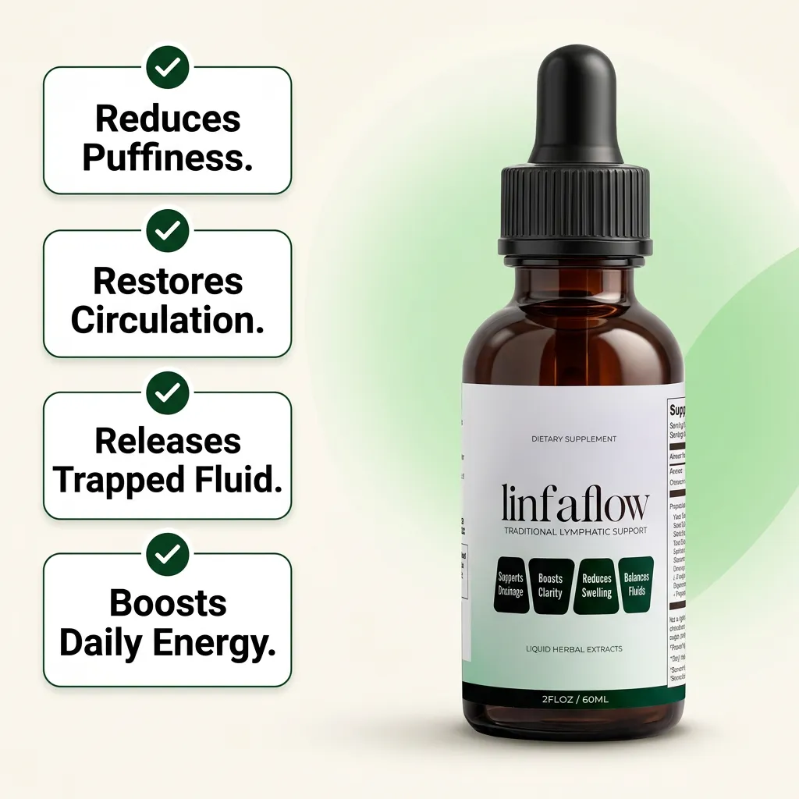

I didn’t find LinfaFlow in an ad. The name just kept coming up — a sister-in-law, a comment thread, a segment I half-watched while folding laundry. When a name follows you around like that, you either order it on impulse or you do your homework. I did the homework, and this is the whole story.
The part of my day I stopped talking about
I’m 56, from Dayton, Ohio — two kids, one grandson, and a front-desk job that keeps me on my feet more than I’d like. If you asked how my health was, I’d say fine, and mean it.
What I stopped mentioning were the little things. Sock marks by noon, shoes tight by five, a puffy face on slow mornings — the pattern that made the name stick the first time I heard it. None of it was dramatic enough for an appointment. All of it, together, was quietly rearranging how I planned my day.
Everything I tried, and why none of it stuck
I did what careful people do. I put my feet up in the evening. I drank the water — my bottle has the little time markings down the side and I hit them. I cooked with less salt than anyone else in the house would have voted for. On long days I wore the compression socks exactly the way they’re meant to be worn, and I still wear them when they’re called for.
Some of it helped while I was doing it. What wore me down was that none of it carried into the next day, and every fix was one more thing to remember. I even priced the professional lymphatic massages at a studio one town over: lovely, and $150 a session, forty minutes from my house. I couldn’t live there.
I’ll say the thing my own family made me promise to say: swelling that is new, sudden, in one leg only, or that comes with breathlessness or chest pain is a conversation for a doctor, not a shopping decision. The notice at the top of this page is there for a reason, and I mean it.
The one sentence that changed my mornings
It was the massage therapist who said the sentence I went home and repeated to my husband: “Blood has a central pump — the heart. Lymph doesn’t.”
She explained it simply. Lymphatic vessels have their own small muscular walls that squeeze, and past that the whole system leans on ordinary things — walking, breathing, the pump of your muscles as you move — to keep fluid travelling along. Heard that way, all the standard advice finally clicked together as one idea instead of a chore list: movement, elevation, hydration.
It also answered the question that had been bugging me for years: why everything I tried felt like daily labor and never a fix. And it left me with a new one I’d never thought to ask — what could I put inside that daily routine?
The 30-second thing I actually kept
What I added was a liquid botanical supplement: one to two droppers (1–2 mL) under the tongue, once or twice a day. Thirty seconds, nothing to swallow, nothing to prepare. Four traditional botanicals — cleavers, red clover, stillingia and prickly ash — made to support normal fluid balance.
The bottle lives next to the coffee maker. Drops first, then the kettle, then five minutes on the back porch while the coffee brews — my version of the “movement” part of the equation. It’s the first routine I’ve kept going past February. That’s my experience of the routine; a supplement is not a treatment for anything, and what any one person notices varies.
Paid link — we earn a commission if you buy through it.
Go to the Official LinfaFlow Checkout
The four botanicals, and nothing hiding behind them

Cleavers
Traditionally nicknamed the “lymphatic broom” in Western herbalism — a traditional name, not a description of what it does in the body.

Red clover blossom
A traditional botanical long used in Western herbal practice.

Stillingia root
A root used in traditional Western herbal formulations.

Prickly ash bark
A bark with a long history of traditional use.
The full ingredient list and the exact amounts are printed on the product label on the seller’s own website. If a page ever describes an ingredient that isn’t on that label, trust the label.
My daughter’s wedding
Here’s the part I don’t tell many people. My daughter got married in June, and for months I’d quietly dreaded it. Not the ceremony — the reception. I’d pictured myself parked in a chair by the good shoes I’d given up on, waving people off to the dance floor.
So in the weeks before, I got stubborn about the boring stuff. The morning walk, every day. The water. And the thirty-second ritual, no exceptions. On the day itself I made a decision that had nothing to do with any product and everything to do with me: I was not going to spend my only daughter’s wedding worrying about my feet.
I danced. Maybe I paid for it a little the next morning and maybe I didn’t — honestly I was too happy to keep score. What I know is that I’ve stopped organizing my life around 5 p.m., and that the routine came with me when I travelled instead of falling apart the first day I left home. That’s worth more to me than any before-and-after photo.
Where a daily routine actually fits
Let me be square with you, because the people who trust me are the reason this is worth writing. Compression garments, professional lymphatic massage, and the advice of your own clinician each do something a supplement does not do. This is a botanical product for daily use. It’s meant to sit alongside what you already do, not replace a single piece of it.
It is a dietary supplement of four traditional botanicals, sold by the manufacturer on its own website. It is not a medicine, and it’s not a substitute for compression garments, manual lymphatic drainage, prescribed medication, or your own provider’s advice. If you use any of those, keep using them and talk to your provider before adding anything new — especially if you take diuretics, blood thinners or blood-sugar medication.
At a glance
Best for
The end-of-day heaviness and morning puffiness pattern described on this page.
Ingredients
Four traditional botanicals — cleavers, red clover, stillingia, prickly ash. Full label on the seller’s site.
How to use
One to two droppers (1–2 mL) under the tongue, once or twice daily. About 30 seconds.
Where to buy
The manufacturer’s official website only, through the buttons on this page.
Price & terms
The current price, any introductory discount, and the refund window are stated on the official checkout — read them there before ordering.
The questions I’d ask
- Is “Melissa” a real single person?
- No — this is a composite. Names and details are changed and several readers’ accounts are combined. It’s here to describe a routine honestly, not to promise you a result.
- How is it taken?
- One to two droppers under the tongue, once or twice a day, the way the seller instructs.
- What does it taste like?
- A herbal liquid with a plant-forward taste. Most people take it with a little water.
- Can I take it with my medication?
- Ask your doctor or pharmacist first — especially with diuretics, blood thinners or blood-sugar medication. That’s the honest answer and the only one I’ll give.
- How long does a bottle last?
- The seller lists 59 servings of 1 mL per bottle, so it depends on whether you take one or two droppers, once or twice a day.
- What about returns and refunds?
- The refund policy and terms are on the seller’s own checkout page, and those are the terms that apply. Read them there before you order.
- Is this the official LinfaFlow site?
- No. I’m an independent affiliate publisher. The buttons here go to the manufacturer’s own checkout — the only place it’s sold.
Paid link — we earn a commission if you buy through it.
Go to the Official Product Page